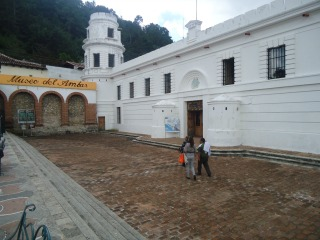
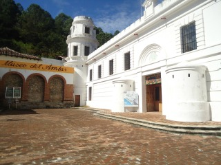
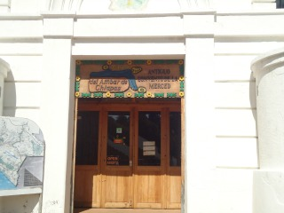
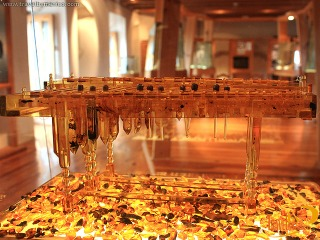
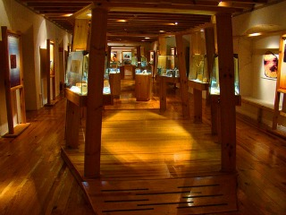

El Museo del Ámbar de Chiapas fue inaugurado el 4 de Diciembre del año 2000 en el Ex convento de La Merced. Su sala de exhibición cuenta con más de 300 piezas en donde se muestra de manera didáctica el origen y edad del ámbar, cómo se formó, los principales yacimientos en el mundo, modo de extracción, usos prehispánicos y actuales, así como bellísimas piezas de escultura lapidaria, piezas en ámbar ganadoras de concursos, y artículos de joyería a la venta.
Se encuentra ubicado en la Calle Diego de Mazariegos a un costado de la Iglesia de La Merced.
Si usted se encuentra ubicado en la plaza de la paz viendo de frente hacia la catedral puede caminar hacia atrás como referencia encontrará frente a la plaza el asilo de ancianos San Juan de Dios camine sobre esa acera hasta llegar a la esquina pasando por Bancomer cruce la calle y continue caminando una cuadra mas pasando por scotiabank y al llegar a la esquina de vuelta a la derecha y camine 3 cuadras hasta encontrar la iglesia de la Merced y a un costado de esta encontrará el museo.
En el lugar usted puede realizar actividades como:
* Fotografía
* Compra de Artesanía
* Visita a lugares históricos
* Visita a Museos





posicione el mouse sobre las imágenes